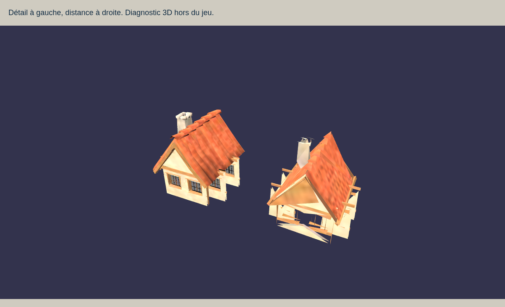
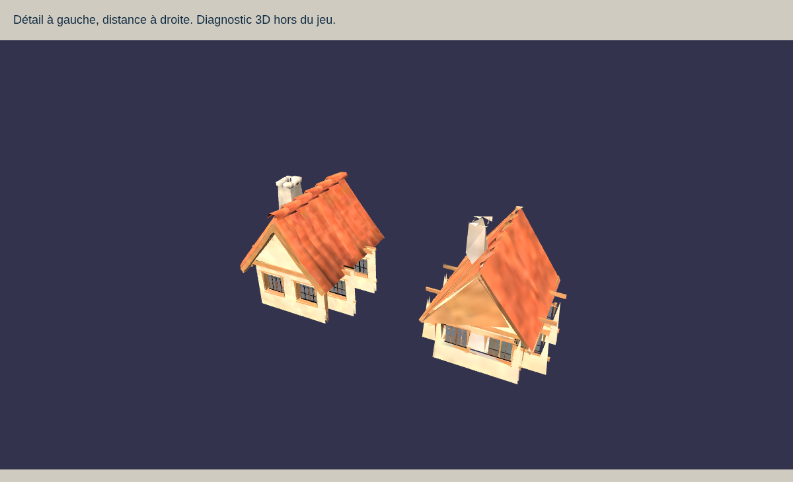
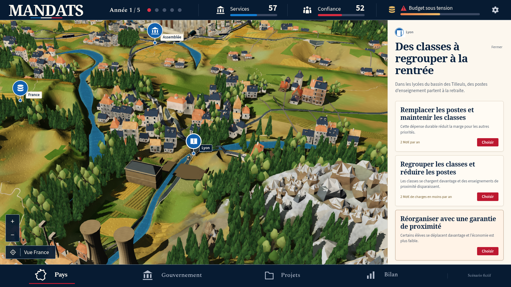
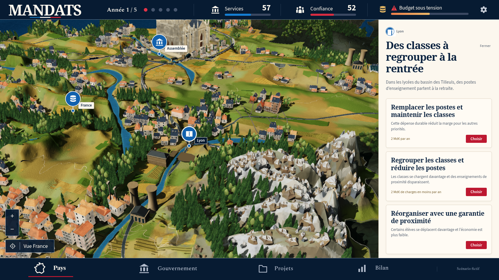
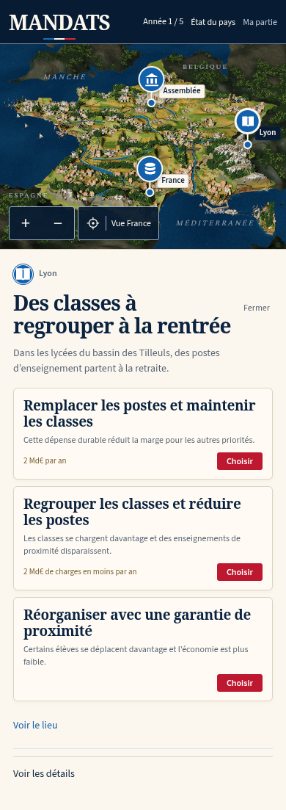
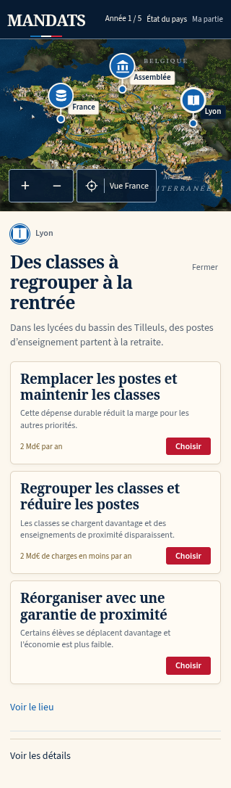

Itération 38, conformité artistique encore refusée
Une maison CC0 intégrée dans la vraie carte
Cette étape reprend l'atelier du 9 octobre. La maison alsacienne est intégrée aux deux implantations existantes à Besançon. Ses deux niveaux ont une seule surface, un atlas adapté à la distance et des normales corrigées. Les 70 autres racines actives du kit restent identiques. La composition du pays, ses événements et ses décisions ne sont pas refondus dans cette étape.
Avant l’intégration
Les captures natives préalables gardent le kit original : vue nationale et inspection. Les conditions sont dans leurs JSON. Deux maisons modifiées ne changent pas sensiblement cette composition.
Modèle distant écarté

À droite, l'ancien export à 287 triangles ouvre ses façades. Cette planche est un diagnostic Babylon isolé, distinct du jeu.Deux niveaux finis

Détail : 1 481 triangles, atlas 512 pixels. Distance : 695 triangles, atlas 128 pixels. Une primitive chacun. Le niveau éloigné reste moins précis ; les petits raccords de toiture demandent encore de la finesse. GLB réellement inspecté, contacts et passage de caméra.
Architecture et vallée

Inspection native « Voir le lieu », aucune décision dépensée. Le nouvel actif n'est pas généralisé à tous les quartiers. Conditions.Reliefs et eau

Reliefs, forêt et rivière réels, après un clic natif de réduction. Les grandes faces alpines, les houppiers et la campagne restent trop grossiers face à la maquette. Conditions.
Parcours mobiles du build final
Captures de la suite rework originale, version 12, graine 0, zéro décision. Les trois réponses restent accessibles par défilement, avec la direction bleu nuit et ivoire. Entrées, provenance et empreintes.
390 pixels

Chromium, 390 × 844. Le troisième choix nécessite un défilement.320 pixels

Chromium, 320 × 740. Les réponses se lisent dans la continuité du sujet.WebKit
WebKit, 390 × 844. Cette capture cloud ne mesure pas un téléphone physique.Écarts restants
- Deux maisons n'améliorent pas sensiblement la composition nationale.
- La cathédrale conserve un corps et une toiture trop massifs.
- Les reliefs restent continus et anguleux ; la campagne et les ports manquent de finesse.
- Le contexte voisin reste répétitif ; les forêts n'ont pas encore les silhouettes de la référence.
- L'export distant conserve moins de détails et de petits raccords de toiture imparfaits.
Preuves et portée
Les quatre vues natives utilisent le build final sans substitution réseau, injection de caméra ni modification d'état. Les JSON conservent les empreintes calculées depuis les véritables corps JavaScript et CSS reçus, les ressources et les actions. La planche et le contrôle physique utilisent les mêmes constructeurs de terrain, villes et bibliothèque, dans une scène isolée déclarée.
Deux pieds contrôlés, écarts au maximum du terrain de 0,003 et 0,004293 unité ; 781 maisons conservées. Le passage réel entre les deux niveaux de caméra est vérifié. Aucun triangle dégénéré ou désaccord de normales de face dans le nouvel export. La seconde génération produit un GLB identique octet par octet.
Reproduction · 70 racines préservées · Modèle GLB · Source Blender · Résultats des parcours et limites
Le contrôle complet et la construction finale réussissent. La fidélité artistique de la carte reste NONCONFORM ; aucune fluidité sur téléphone physique n'est établie par ces captures cloud.